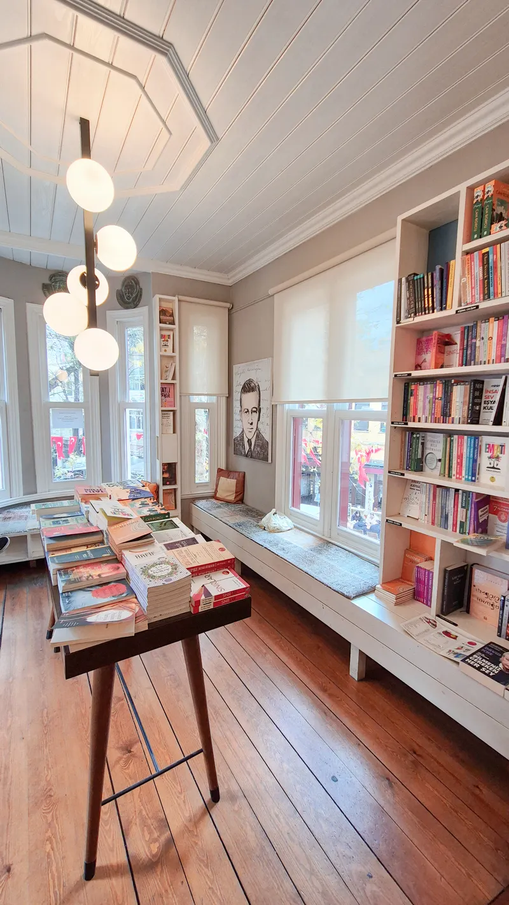

Por qué este libro
La propusimos en septiembre y ganó por cuatro votos a Conversación en La Catedral. Varios lectores del club la leyeron a los quince años, obligados por el colegio, y querían saber qué queda de ella cuando ya no te la toman en examen.
Es una novela sobre la violencia que se aprende en grupo: los cadetes del Leoncio Prado inventan un código propio, lo defienden a golpes y terminan protegiendo a quien menos lo merece. Leída hoy se siente menos como un retrato de época y más como un manual de cómo funcionan ciertas instituciones.
No hace falta haber leído a Vargas Llosa antes. Sí conviene llegar con la primera parte terminada, porque ahí se juega el crimen que ordena todo lo demás.
Un colegio a cien metros del mar
El colegio de la novela existe. Queda en La Perla, frente al acantilado, y todavía se ve desde la Costa Verde cuando el taxi baja hacia el Callao. La neblina, el viento húmedo y el olor a mar que atraviesan el libro son los mismos que entran por la ventana del altillo en invierno.

Para esta sesión pegamos en la pared un plano de 1950 de Lima y Callao con el colegio, la casa del Jaguar y los barrios de Miraflores que aparecen en la segunda parte. Muchos se sorprenden de lo cerca que está todo.
Cómo leemos juntos
La sesión dura noventa minutos. Abrimos con una lectura en voz alta de dos páginas que elige alguien distinto cada mes; esta vez le toca a Rosa, que eligió el final del capítulo del Esclavo.
Después hablamos sin moderador fijo. Hay una sola regla: nadie cuenta el final a quien no lo ha leído, y quien no terminó la novela también es bienvenido.
Qué se toma esa noche
El café del mes es un geisha de Villa Rica, Pasco: notas de mandarina y panela, filtrado en V60 a 92 °C. Para quien no toma café de noche hay infusión de hierba luisa con cedrón.
La cocina prepara alfajores de maicena y una torta de chancaca pequeña para compartir. Todo está incluido en la inscripción.
Cómo inscribirte
Son doce sillas. La inscripción cuesta S/ 35 e incluye el café, los dulces y un 15 % de descuento en el libro. La edición de bolsillo cuesta S/ 49.
Separa tu silla en la caja o escríbenos a club@folioygrano.pe con tu nombre. Si ya no hay sitio, te anotamos en la lista de espera y te avisamos el martes 14.